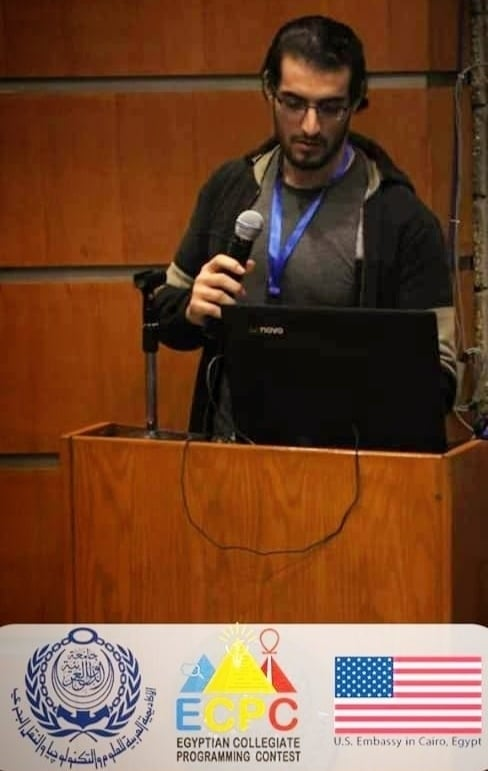

Mohamed Soliman

hi.
valeriaaaaat valeria_tanotoValeria is currently pursuing the Bachelor of International Studies. She works actively in 2 organisations, VAV and PERMIT. Her high self-initiatives, fast learning pace, and motivation led to her directing the Academic and Recreation Division of PERMIT.